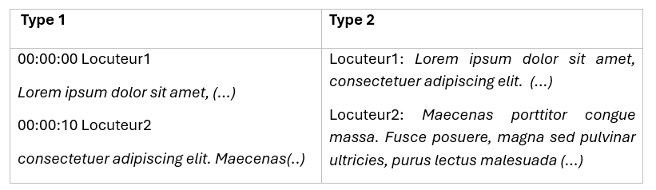
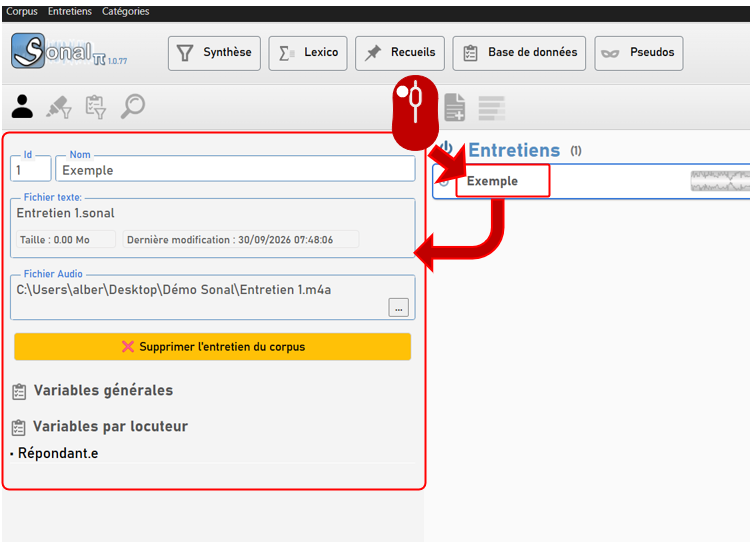
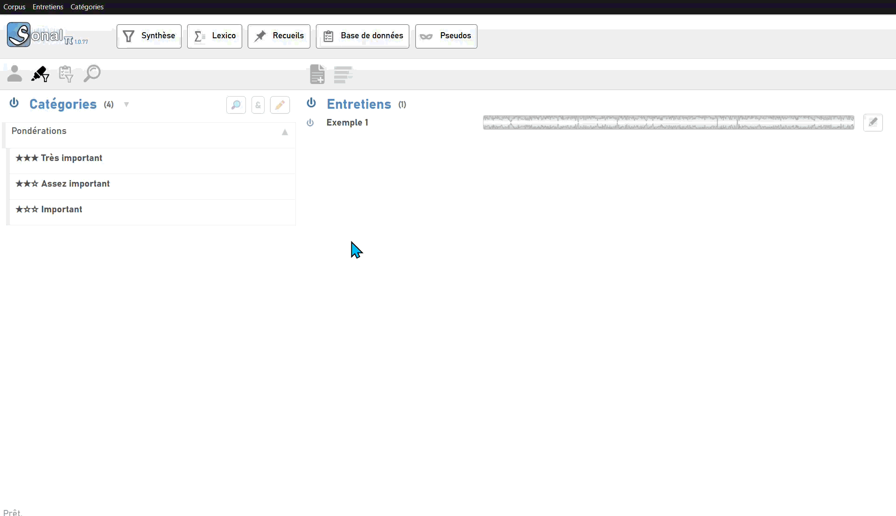
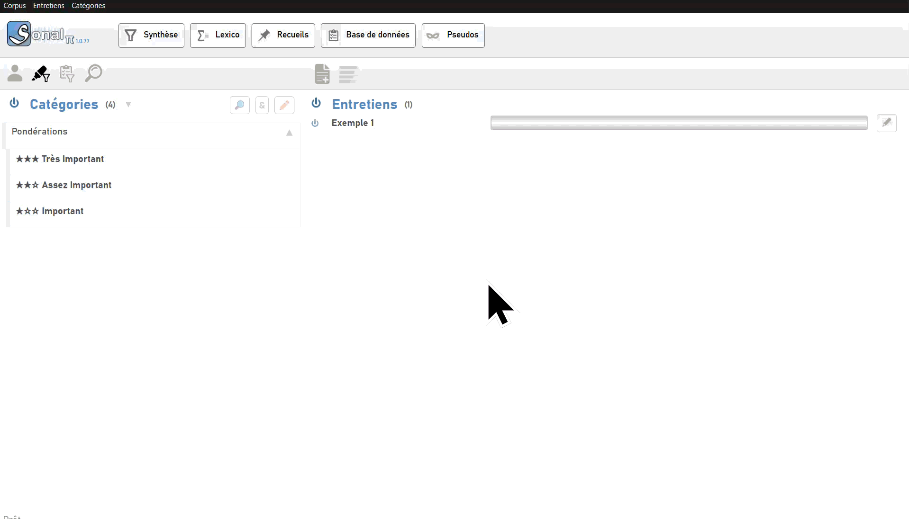
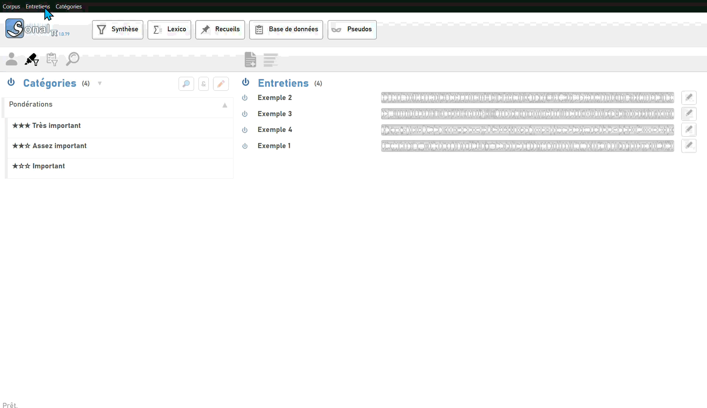
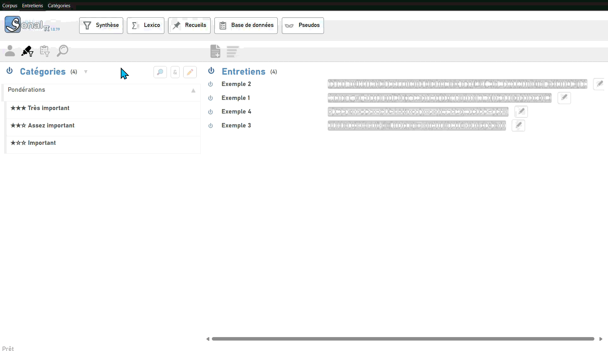
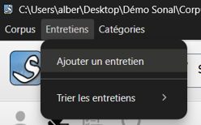
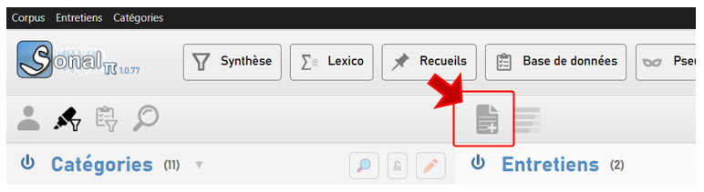
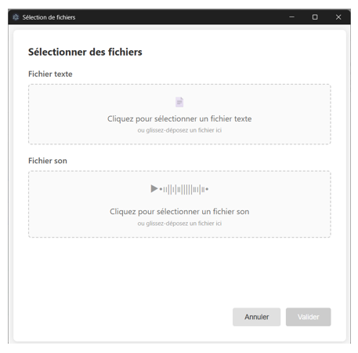

3 - Ajout/gestion des entretiens
Sonal Pi 1.0.81 vous permet d'ajouter des fichiers audio et/ou des fichiers texte. Les fichiers vidéo seront ajoutés dans une version ultérieure. Le logiciel peut fonctionner avec seulement des fichiers texte ou seulement des fichiers audio, bien qu'avoir les deux ensemble soit idéal.
3.1 Ajouter un entretien
3.1.2 Quels types de fichiers sont compatibles ?
Fichiers audio :
- mp3
- wav
- m4a
- ogg
Fichiers texte :
- srt
- vtt
- txt
- docx
Sonal est optimal pour importer des fichiers de sous-titres (format .srt ou .vtt). Chaque tour de parole est marqué dans le temps, et si la transcription est « diarisée » - c'est-à-dire que le locuteur est indiqué au début de la ligne - cette synchronisation du texte et du son économise un temps considérable pour la correction des fichiers. Des fichiers texte moins détaillés peuvent aussi être ajoutés (txt, .docx, .pdf), mais ils doivent être structurés d'une certaine manière pour que Sonal en tire le maximum d'informations.
Structures de fichiers texte :
Type 1 : Une ligne (précédée et suivie d'un saut de ligne) contient la position chronométrique (format hh:mm:ss) puis, après un espace, le nom du locuteur. Après un saut de ligne : le texte de la transcription. Ceci est la meilleure alternative aux fichiers de sous-titres.
Type 2 : Au début de chaque paragraphe, le nom du locuteur suivi d'un deux-points et d'un espace.

Si vos fichiers textes ne sont ni des fichiers de sous-titre, ni des fichiers textes structurés selon le type 1 ou 2, vous pourrez quand même les importer mais en perdant des informations cruciales (la position dans le temps et/ou les tours de parole). Cela ralentira la correction des fichiers.
3.1.3 Le fichier .Sonal
En ajoutant un entretien vous créez dans le répertoire de travail un fichier dont l'extension est « .Sonal » et qui porte le nom du fichier de transcription. Il est placé dans le dossier du projet. C'est dans ce fichier que toutes les informations que vous allez ajouter en codant seront conservées. Concrètement, ce fichier contient tout votre travail sur l'entretien. Si vous faites une sauvegarde de votre projet, c'est ce fichier qui sera copié.
Bon à savoir :
Les fichiers .Sonal sont des fichiers HTML qui peuvent être ouverts avec un navigateur internet (Firefox, Chrome, Opera etc.)
Cela implique que si vous chargez à nouveau un entretien à partir par exemple d'un fichier srt, Sonal va vous demander si vous voulez écraser le fichier .Sonal existant. Soyez prudent(e). Pour recharger un entretien sur lequel vous avez déjà travaillé, le mieux est de charger directement son fichier Sonal.
3.2 Gérer ses entretiens
Une fois qu'un entretien a été ajouté dans le corpus, vous avez accès à un certain nombre de fonctionnalités en cliquant sur son nom dans la fenêtre de corpus. Un panneau latéral apparaît alors avec certaines informations et options de modification.

3.2.1 Renommer un entretien
La zone de texte contenant le nom de l'entretien est éditable. Modifiez le nom de l'entretien puis validez avec entrée pour le renommer.

3.2.2 Supprimer un entretien
Dans le panneau latéral affichant les détails des entretiens, cliquez sur « Supprimer l'entretien du corpus ». L'entretien ne figure plus dans le corpus.
Bon à savoir :
Supprimer l'entretien veut seulement dire retirer l'entretien du projet, le déréférencer, pas retirer physiquement les fichiers source ni le fichier .Sonal.
3.2.3 Ajouter ou modifier le fichier son associé à un entretien
Dans le panneau latéral, cliquez sur le bouton « ... » au bout de la ligne du fichier audio puis sélectionnez un fichier.

3.2.4 Trier les entretiens
Lorsque vous avez plusieurs entretiens dans votre projet, il devient possible de les trier de plusieurs manières. Dans la fenêtre principale, faites « Entretiens → Trier les entretiens ».
Vous pouvez trier vos entretiens par :
- Ordre alphabétique
- Date d'ajout
- Durée du fichier audio
- Nombre de codes appliqués

Attention :
Le processus de tri peut prendre quelques secondes. Pour éviter tout problème, il est préférable d'attendre qu'il soit complètement terminé avant de faire autre chose. Attendez que la mention « tri en cours » en haut à droite disparaisse.
3.2.5 Afficher les entretiens à leur taille proportionnelle
Par défaut, Sonal représente tous les entretiens de la même largeur. Mais vous pouvez préférer que dans le corpus, les barres symbolisant les entretiens soient d'une largeur proportionnelle à leur durée. Cliquez sur le bouton correspondant pour activer ou désactiver cette option.

3.1.1 Comment ajouter les entretiens ?
Les entretiens sont ajoutés depuis la fenêtre principale. Cliquez sur le menu « Entretien » → ajouter des entretiens, ou directement sur le bouton plus du panneau des entretiens.


Dans la fenêtre d'ajout d'entretien, sélectionnez successivement un fichier texte et un fichier audio. Vous pouvez aussi faire un glisser-déposer de plusieurs fichiers directement dans le logiciel (en version 1.0.81, cela ne fonctionne qu'avec les fichiers texte).
